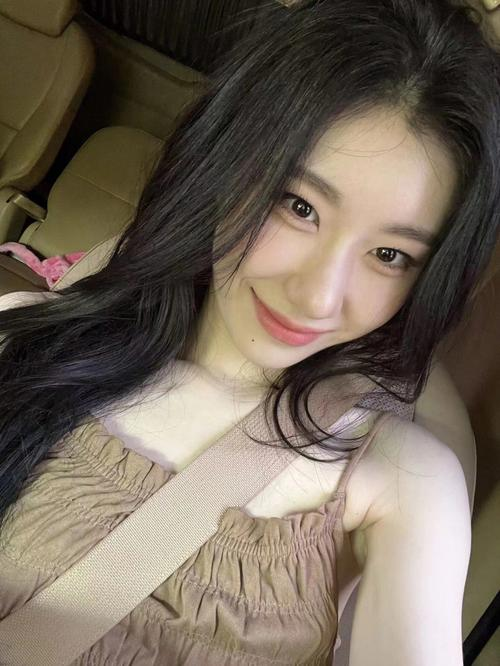

李彩领（Chaeryeong）

基本信息
| 中文名 | 李彩领 | 韩文名 | 채령 | 生日 | 2001-06-05 | 星座 | 双子座 | 队内担当 | 主舞、副唱 | 所属社 | JYP Entertainment |
|---|
外貌与气质
李彩领气质温婉大方，五官清秀干净，长相温柔甜美，自带端庄优雅的气质。脸型小巧精致，眉眼温柔恬静，给人一种乖巧文静、温柔大方的感觉。仪态非常好，站姿坐姿都很端庄，自带多年练习生沉淀出来的优雅气质

舞台实力
她拥有多年扎实舞蹈功底，是队内舞蹈实力顶尖的成员。舞蹈动作标准规整，力度控制恰到好处，线条优美流畅，动作干净不杂乱。舞台表情管理极其优秀，每一个角度、每一个眼神都拿捏到位，舞台仪态优雅大方。唱歌音色温柔甜美，气息稳定，音准很好，副唱部分表现稳定，唱跳状态全程在线，业务态度极度敬业认真。
性格与人品
性格谦逊低调、温柔乖巧，做事踏实努力，自律性极强，对自己要求很高，一直默默沉淀、不断进步。待人有礼貌、温柔善良，懂得体谅他人，心思细腻，很会照顾身边的人。性格安静内敛，不争不抢，不刻意争镜头、不张扬炫耀，靠实力和努力一点点被大家认可，低调又踏实。
个人魅力
她是典型的努力型实力派，温柔、自律、谦逊、敬业，气质温婉大方，舞台专业度拉满。不争不抢却默默发光，认真踏实的性格和过硬的业务能力，让人好感度拉满。